2nd Year BSIT Student at Bulacan State University - Hagonoy Campus
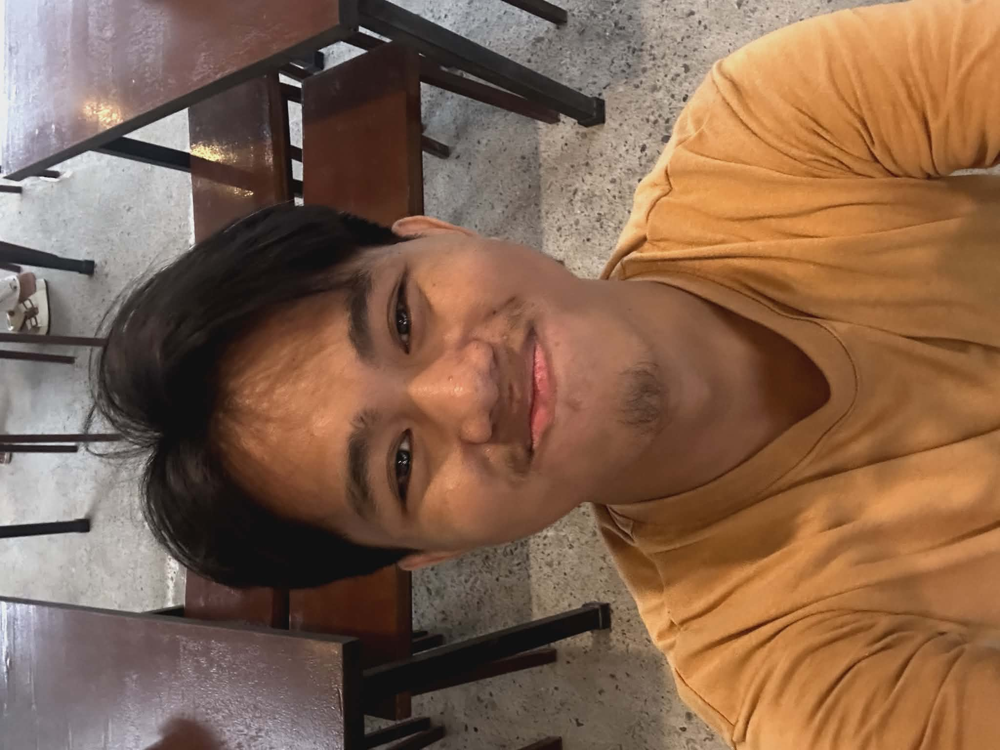
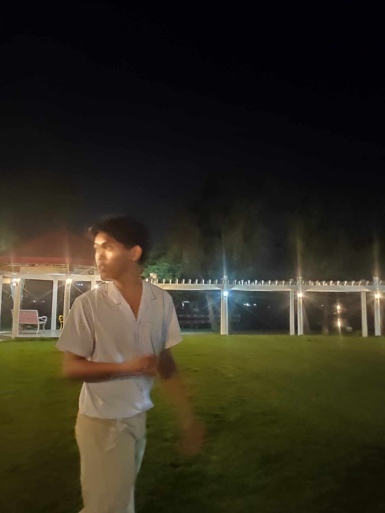
Hi! I'm Edrian Sedrik Halili, 19 y/o, a 2nd year BSIT student at Bulacan State University - Hagonoy Campus. I.T wasn't exactly my first choice, but I've learned to adjust, adapt, and embrace it — and honestly, I'm starting to enjoy the challenge.
Outside of school, you'll find me grinding ranked in Valorant, cruising on my bike through new roads, or deep in an anime arc I probably shouldn't have started on a school night. I'm someone who values low-key friendships, good music, and the occasional late-night ride.
This blog is my little corner — a place to document what I'm into, share a few memories, and maybe connect with people who get it.
I love playing Valorant on my free time, here's some of my gameplay:
nigga
I love biking in my free time and exploring new places.
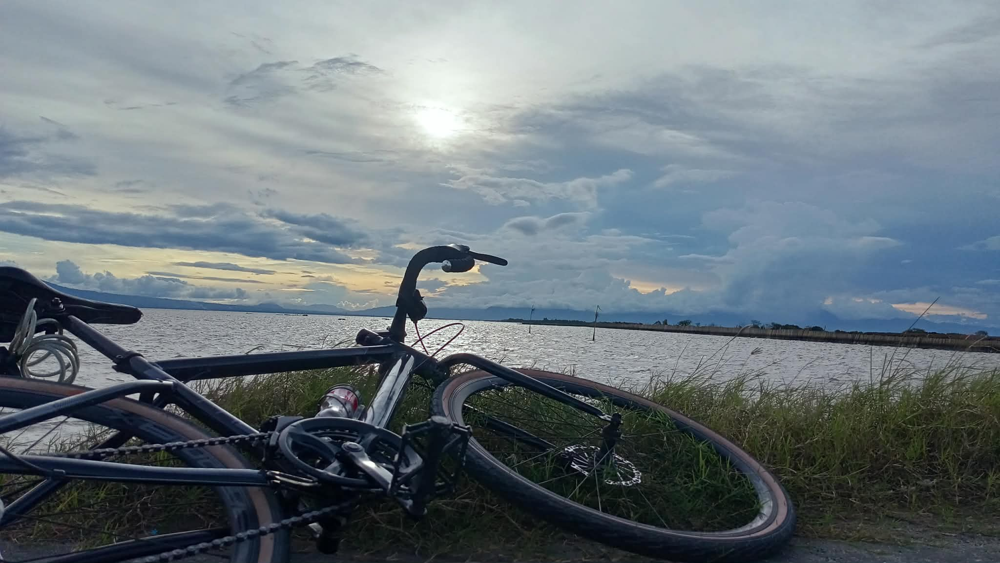
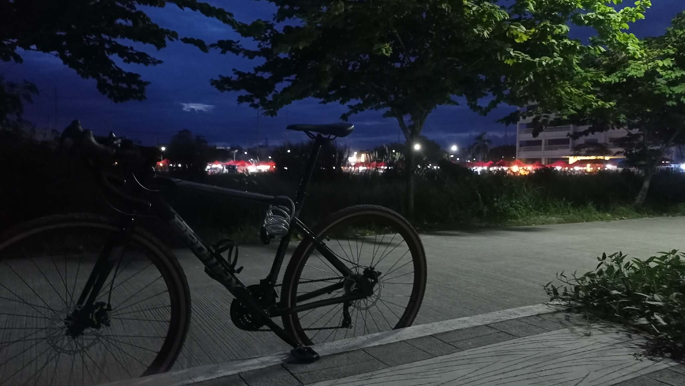
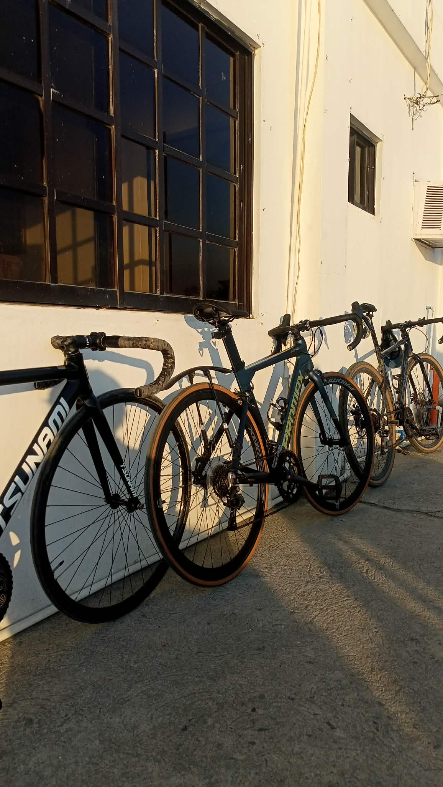
Binge watching anime is one of my favorite ways to relax after a long day.
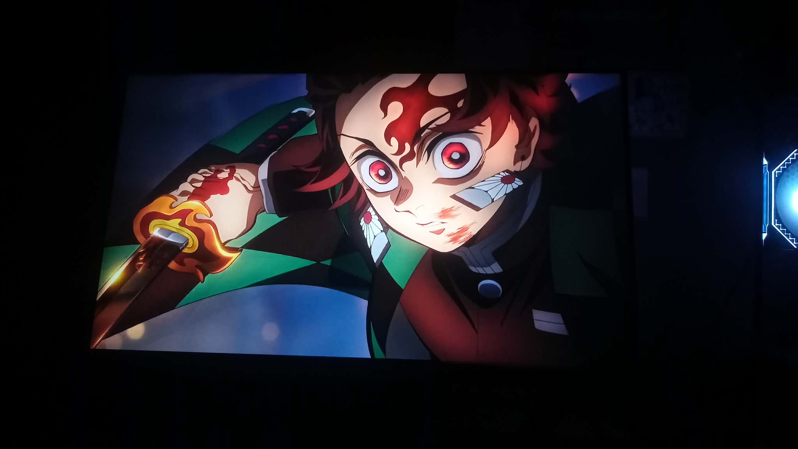
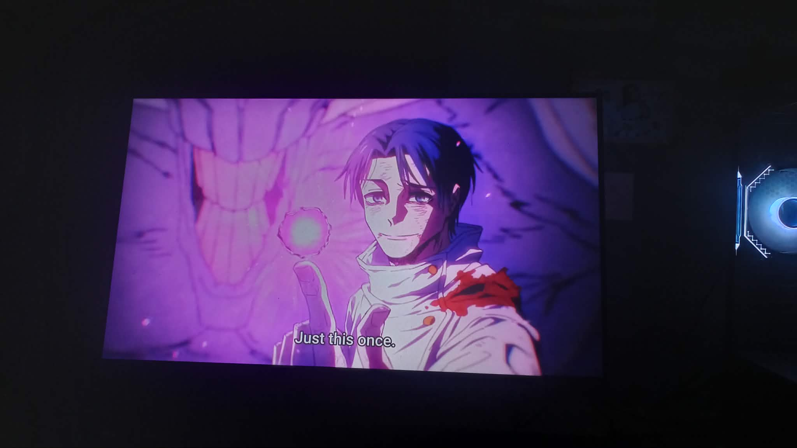
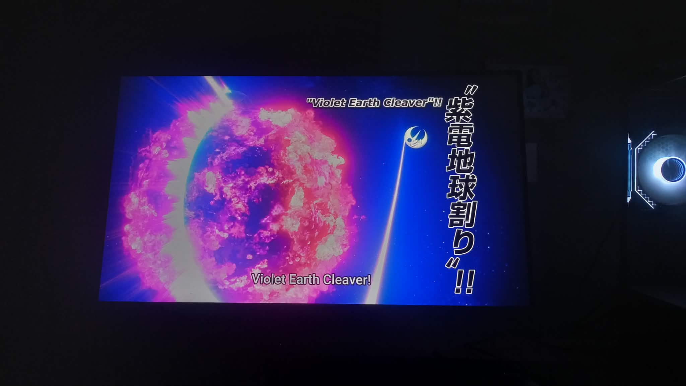
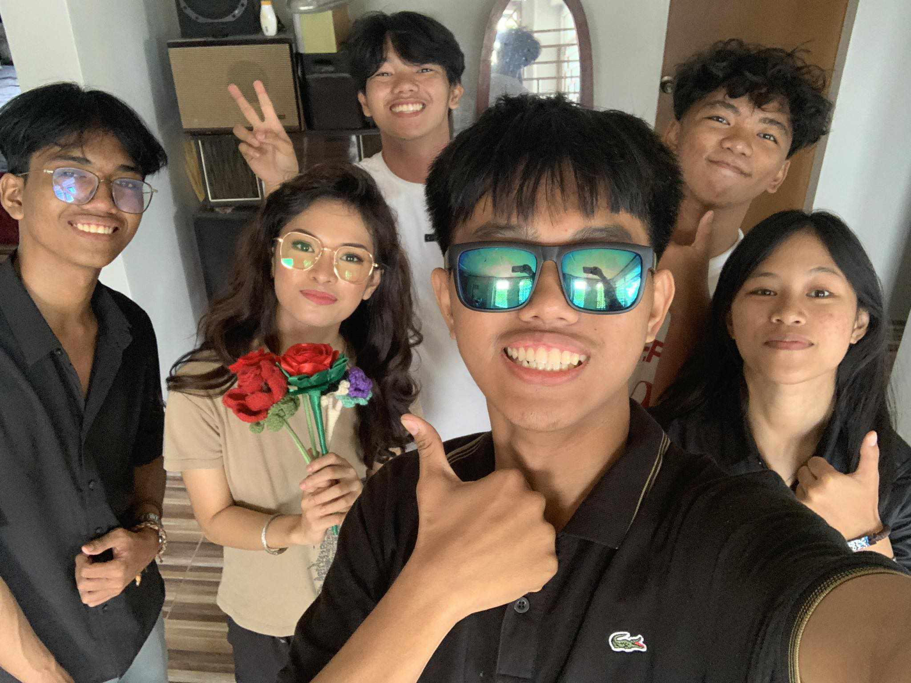
Spent my first overnight at my friend's place—definitely one of the best experiences ever!
Taken before college started. Low-maintenance friendships are the best — still close even without constant contact.
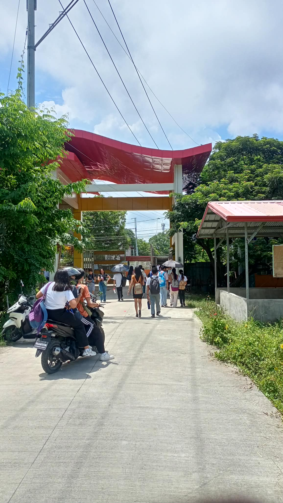
First week on my freshman year at Bulacan State University - Hagonoy Campus. I.T. wasn't my first choice, yet I'm still here, making the most of it.
Here are some of my favorite songs:
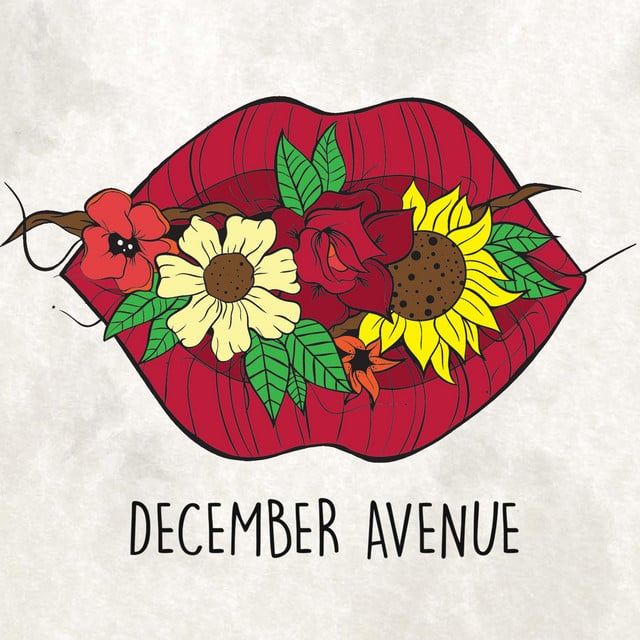
Bulong by December Avenue is one of the songs on my playlist that just hits different during late nights. Bulong is a song about the quiet, unspoken feelings that linger after a breakup — the things we wish we could say but never do. I usually listen to this when I'm overthinking or just chilling alone — it helps me slow down and reflect on those emotions without getting overwhelmed.
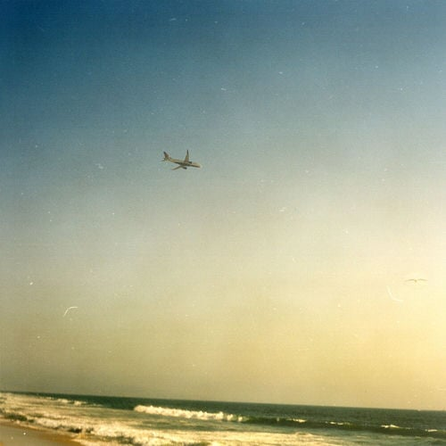
Oceans & Engines by NIKI is a heartfelt ballad about the painful necessity of letting go of a first love, navigating heartbreak, and finding the strength to move on. The song captures the bittersweet emotions of holding onto memories while realizing that sometimes, we have to set them free to heal and grow. I listen to this when I'm in a reflective mood, especially when I'm thinking about past relationships or moments that were significant but ultimately had to end.
Multo by Cup of Joe is a hauntingly beautiful song about the emotional ghosts that linger long after a relationship ends. Beyond heartbreak, multo can also represent the dreams and aspirations we never achieved, yet still haunt our minds.
If you'd like to get in touch, feel free to reach out!